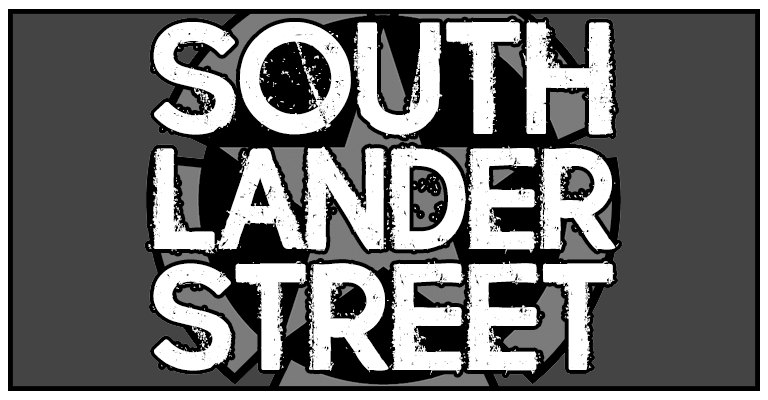
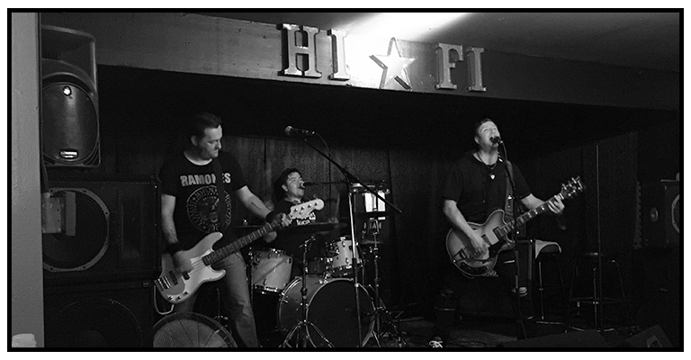

About the Band:
SOUTH LANDER STREET is a hard-driving power trio of Union Workers who all work on S. Lander St. in the city of Seattle.
Their material hits home hard... As a mix of Classic Punk, Garage and Rock n' Roll, the play and sing about all of life's victories and defeats.
Their sound is a mix of charging drums, pin-point and hell-bent bass and a wash of over-driven guitars. Their Influences range from the Ramones and Social Distortion to 90s era Seattle-based music.
The fact of the matter is this: SOUTH LANDER STREET is a fun time from the moment they show up, until they leave the stage.
Almighty Todd - Guitar
El Guapo - Drums
T.Jay Rocket - Bass
SouthLanderStreet.com - Produced by T.Jay Rocket - © 2017 Rogue Independent Media - For inquiries - please contact us at southlanderstreet@gmail.com